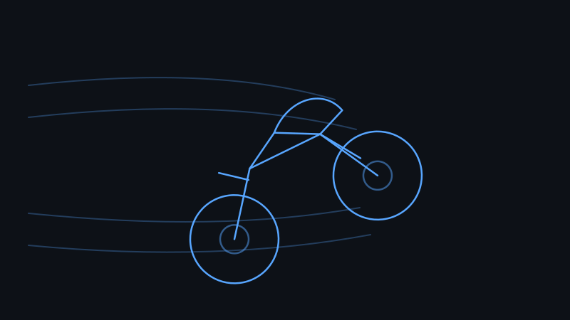
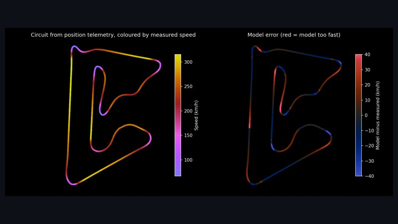
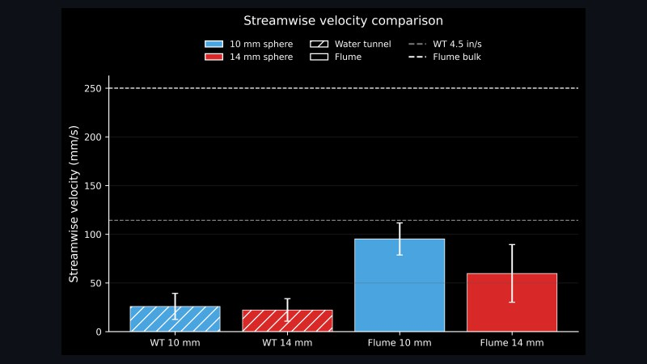
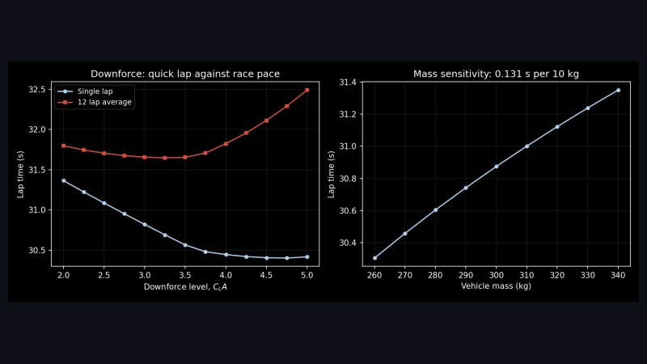
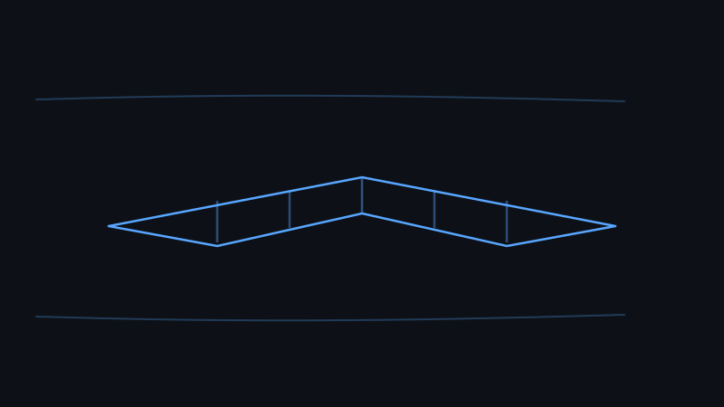
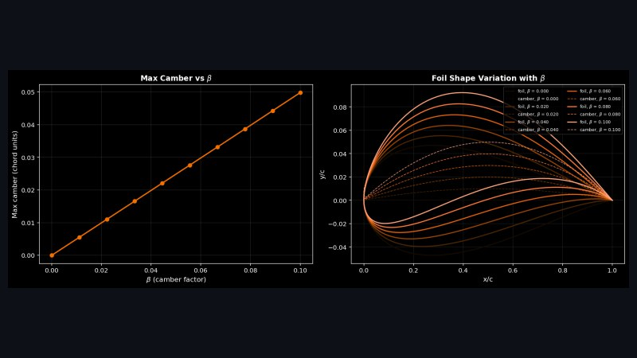

Projects

Cornering Aerodynamics of a MotoGP-Style Motorcycle
Final-year group design project using CFD and wind tunnel testing. I am the team leader, the aerodynamic design lead, and the lead for CAD development and manufacture of the test model.
View project →
Predicting an F1 Lap, and Checking It Against the Real One
A physics lap time model and a tyre degradation model validated against 2025 Bahrain Grand Prix telemetry. The model predicts the pole lap to within 0.7%, and evaluates 14,532 race strategies against the one that won the race.
View project →
Tracking Plastics in Moving Water
Individual Master's research project, graded 75%. A Python and OpenCV measurement system converting high-speed footage of plastic particles in a flume into validated trajectory and velocity data.
View project →
Formula Student: Race Engineering
Three seasons with Southampton University Formula Student. Lap-time and tyre degradation simulation, and MoTeC lap analysis used to inform setup and strategy decisions. 2nd in the FSUK Simulator Championship.
View project →R&D Engineering Internship, TREND Networks
Seven weeks in the R&D team at TREND Networks, designing test and measurement equipment. Three design projects, one of which was released for manufacture after ten iterations, alongside responsibility for all office 3D printing.
View project →
Fixed-Wing UAV Wing Design
Second-year group project, ranked 1st in the cohort. Achieved the widest operating speed range in the year group at 23.1 m/s, over 10% ahead of any other team.
View project →
Coursework & Papers
Selected technical reports, available to download: Karman-Trefftz aerofoil analysis by conformal mapping and panel method, minimum-length supersonic nozzle design by the method of characteristics, wind tunnel testing of a NACA 0020, and a wing box FEA convergence study.
View coursework →